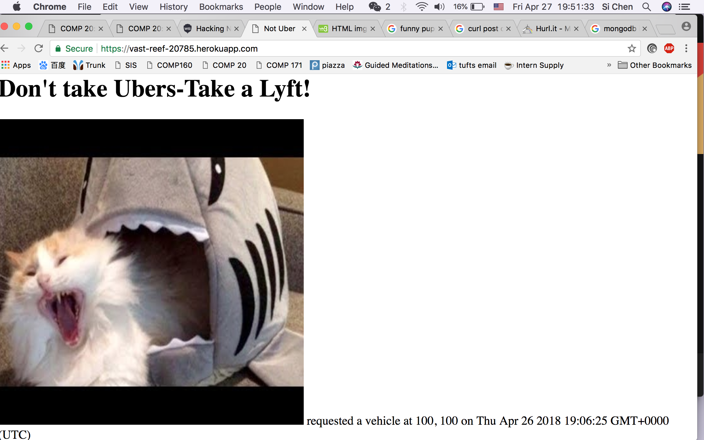
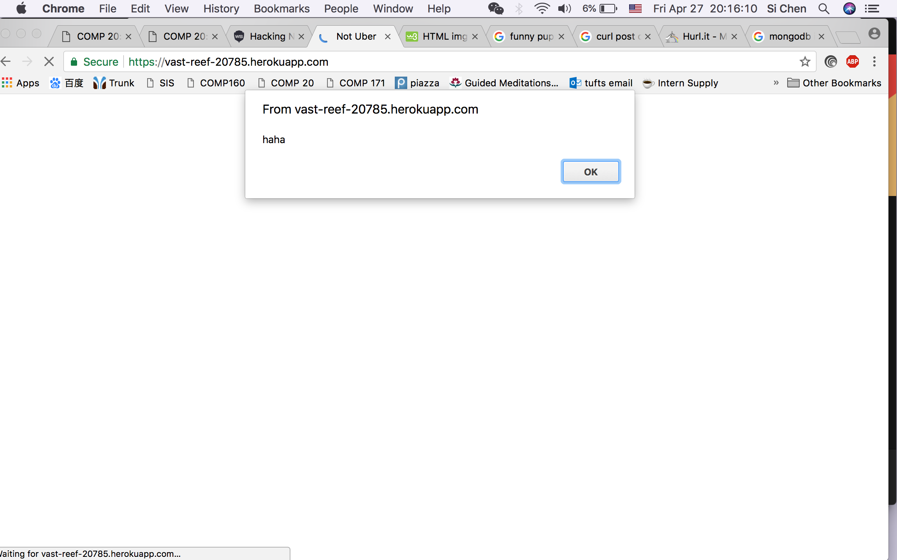

Not Uber is a virtual ride-request service, on the main page, we can see which user requested an vehicle at what time. My job is to fing web security flaws in this product
I used curl to post data to the service to test the application. I tried Cross Site Scripting and Mongo Injection
I was able to find flaws through XSS, in other words, I can post whatever I want on to the page, such as a random picture. Another small problem is the location parameter is not limited to a reasonal range.
Issue 1. XSS
High severity issue. Because hacker can put whatever they want on the site to eliminate the original purpose. I found it by passing a image as a parameter and post to the website. And I posted a script that alerts 'haha'.Here's the screen shot:
The resolution code is actually commented out in the source code: usrnm = usrnm.replace(/[^\w\s]/gi, '');
Issue 2. Missing Minor Parameter Checking
Medium severity issue. The longitude and latitude parameter can be as big as possible, which is not real and can't be shown on the map. The resolution is to check the location parameter is in range.
In general, it's good that I couldn't hack into the database through injection. He did some good parameter checking but still need some more.
https://tuftsdev.github.io/WebProgramming/notes/web_security.html
http://www.veracode.com/security/xss
https://blog.websecurify.com/2014/08/hacking-nodejs-and-mongodb.html
https://www.hurl.it/